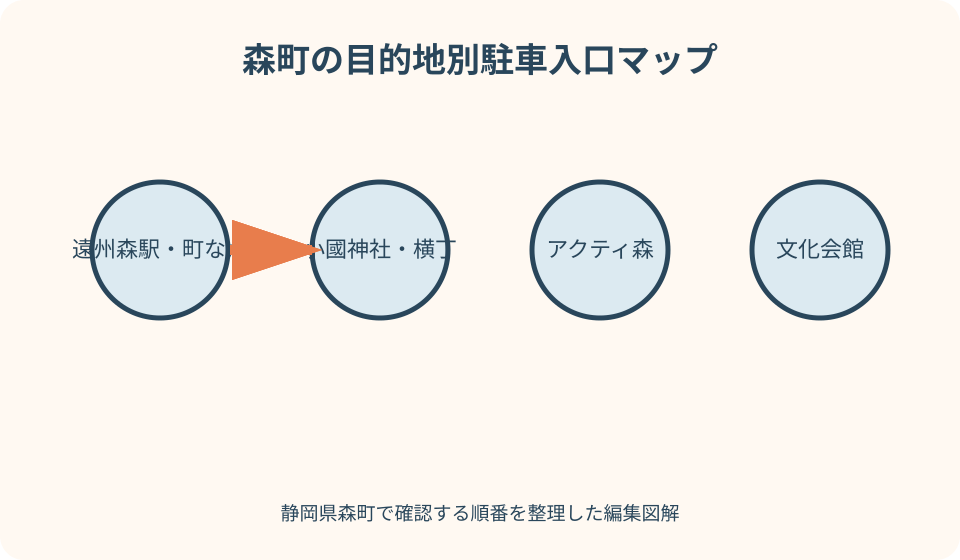
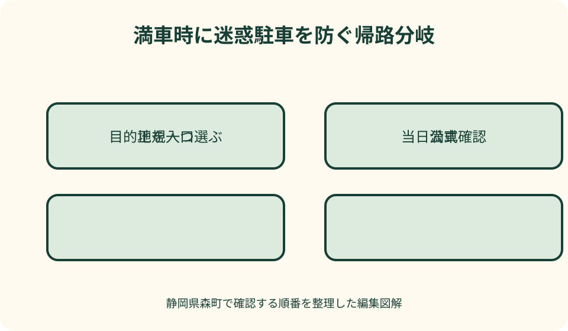

交通・駐車｜最終確認 2026-08-10
静岡県森町の観光駐車場を目的地別に選ぶ｜満車・入口・帰路の確認ガイド
森町観光の駐車場は、町全体で自由に使える一つの大駐車場ではありません。遠州森駅と町なか、小國神社とことまち横丁、アクティ森、文化会館、祭りや花の時期では、管理者、入口、利用できる日と時間が異なります。地図上で空いて見える土地や公共施設の駐車場を観光用と決めつけると、生活道路、施設利用者、地域行事を妨げます。無料・有料や台数も固定せず、訪問当日の公式表示を確認し、満車なら周辺を回らず目的地や交通手段を変えるための実用手順をまとめます。

駐車場探しは目的地を一か所に絞って始める
森町へ着いてから『観光駐車場』を広く検索すると、駅、役場、文化会館、店舗、月極、イベント専用の区画が同じ地図へ現れます。まず訪問先を一か所決めます。
目的地の正式名、住所、運営者公式URLを確認し、そのページから駐車案内へ進みます。一般の地図は入口候補を見る補助にし、利用許可の根拠にはしません。
確認欄は、利用日、入庫可能時間、出庫可能時間、料金、車高・車種、長時間利用、閉鎖情報です。『P』の記号だけでは一項目も確定しません。
家族へは目的地だけでなく駐車場入口の名称を共有します。ナビが施設正面や裏口へ案内しても、現地の誘導看板と係員の指示を優先します。
無料・有料・台数を固定情報にしない
施設公式に無料と書かれていても、特別催事、協力金、予約、時間外、車種で条件が変わる可能性があります。訪問日の告知と入口表示を読みます。
掲載台数は満車にならない保証ではなく、工事、出店、バス区画、身障者区画、災害対応で実際に使える範囲が変わります。数字から待ち時間を推定しません。
料金を支払えば閉場後も置けるとは限りません。ゲート、施錠、出庫制限、宿泊・夜間利用の可否を管理者へ確認します。
古いブログの料金表や台数は、更新日と運営者が不明なら使いません。記事では数字を転載せず、公式ページの最新表示へ戻る方法を示します。
入口は駐車場のピンより重要
同じ駐車場でも、繁忙期は入口と出口を分け、一方通行や右折入庫を制限する場合があります。施設の交通案内図を出発前に読みます。
目的地の代表住所をナビへ入れると、歩行者門、社殿、搬入口、裏道へ導かれることがあります。入口名や公式マップの交差点を合わせます。
入口を通り過ぎたら急停止や後退をせず、安全な場所まで進みます。細い生活道路へ曲がって戻るのではなく、公式ルートで再接近できるか確認します。
夜間、雨、紅葉期は案内板が見えにくくなります。同乗者が画面だけを見るのではなく、係員、臨時標識、歩行者を確認します。

遠州森駅は鉄道利用と町歩きを分ける
遠州森駅は天竜浜名湖鉄道の駅で、町なか観光の起点になります。しかし駅周辺に車を置けることと、観光客が長時間利用できることは別です。
駅の駐車・送迎条件は天浜線公式の駅情報か事業者へ確認します。通勤通学の送迎場所、鉄道利用者向け区画、月極らしい区画を町歩き用へ転用しません。
車を停めて天浜線へ乗る場合は、利用可能時間、帰りの列車、出庫時刻を確認します。終列車後や翌日まで置けると想定しません。
町なかを歩くための公式駐車案内が確認できない日は、文化会館や役場へ勝手に置かず、公共交通で来るか、駐車を明示した目的施設一か所へ計画を変えます。
町なかは『一施設利用』と『回遊』を分ける
森町の町なかには寺社、菓子店、歴史的な町並み、公共施設があります。近接していても、各駐車場が回遊観光の共同駐車場とは限りません。
店舗利用の区画へ車を置いて別の場所を長時間歩かず、買物後の利用条件を店へ確認します。短時間の購入でも近隣住宅の出入口を塞ぎません。
寺社の参拝者用、役場の来庁者用、図書館の利用者用など、目的が示された区画はその目的に従います。空車が多いことは一般開放の意味ではありません。
公式な回遊イベントがある日は、主催者の当年マップに従います。前年の臨時駐車場は開催日以外に使わず、案内のない路地へ進みません。
小國神社は通常日と繁忙期を分ける
小國神社公式は複数の駐車区画と駐車場マップを案内していますが、工事や期間で使えない区画があると明記しています。当日の入口表示を確認します。
紅葉、正月、七五三、催事の日は交通規制や区画変更があり得ます。通常日の地図だけで正面近くへ進まず、公式のお知らせと係員誘導に従います。
満車列が生活道路へ伸びている場合、交差点や住宅前で待ちません。神社が示す別区画へ進めないなら、時間を変えるか参拝を見送ります。
大型車、二輪車、車いす利用者などは区画条件が異なります。同じ入口から入れると推定せず、事前に神社へ確認します。

ことまち横丁は神社参拝との順序を決める
ことまち横丁は小國神社門前の施設ですが、横丁の買物客用区画と神社参拝者の駐車動線が常に同じとは限りません。横丁公式マップと神社交通案内を両方見ます。
横丁で買物後に境内を長く散策する、参拝後に飲食する場合は、車を置いたまま利用できる範囲と時間を施設へ確認します。
混雑時に横丁前へ同乗者だけを降ろす行為も、歩行者と後続車を止める場合があります。指定された乗降・駐車場所がなければ路上で降ろしません。
買物品の受取待ちや行列が長くても、閉場や交通規制の時刻を越えないようにします。帰りの出庫方向を先に確認します。
アクティ森は体験の予約時間と駐車を合わせる
アクティ森は創作体験、飲食、販売、屋外活動を備える施設です。町公式と運営者公式で営業、休館、予約、駐車案内を当日に確認します。
駐車場の規模が公式に掲載されていても、催事、工事、団体、バスで利用区画は変わります。数字から必ず停められるとは判断しません。
体験予約がある日は、駐車場入口から受付までの時間を含めて到着します。遅れを取り戻すため細い山道で速度を上げません。
施設利用後に周辺散策や別施設へ長時間出る場合は、車を置き続けてよいか確認します。アクティ森を山間部全体の常設駐車拠点とは扱いません。
アクティ森から山側へ駐車場を連鎖させない
アクティ森より北の山間部には、キャンプ、史跡、滝、ハイキングなどの候補があります。アクティ森の駐車条件を周辺目的地へコピーしません。
山側の小さな施設では、予約者専用、催事日のみ、管理者確認が必要な区画があります。道路脇の広場や集会所を観光用と見なしません。
目的地に公式駐車案内がなければ、現地へ行って探すのではなく管理者へ事前確認します。回答を得られなければ車での訪問を見送ります。
対向困難な道路で満車を知っても、路肩へ寄せて待ちません。安全に戻れる地点を出発前に決め、日没前に町なかへ戻ります。
文化会館は催事日ごとの案内を優先する
森町文化会館の公式アクセスには駐車場案内があります。ただし催事によって駐車場の一部が会場、関係者区画、乗降場所になる場合があります。
公演、講座、図書館、会議など利用目的を明確にし、主催者から指定された入口と区画を確認します。文化会館に近いからという理由で町歩きへ転用しません。
開演直前は入口が混みます。車を停める時間、会場まで歩く時間、受付を含めて余裕を持ち、同乗者を車道へ降ろしません。
終演後は車が一斉に出るため、すぐ出られる前提を置きません。帰路の交差点、歩行者、暗さを考え、係員がいる場合は誘導を待ちます。
季節イベントは前年の臨時駐車場を使わない
産業祭、森のまつり、花火、花の催しなどは、会場、臨時駐車場、シャトル、交通規制が年ごとに変わります。当年の主催者発表だけを使います。
前年地図に企業、病院、学校、役場の駐車場が載っていても、それは特定日の協力区画です。今年も同じ企業敷地へ入れるとは判断しません。
臨時駐車場は開設時間、車種、満車時、シャトル乗場を確認します。イベント終了前にシャトル最終便や出庫時刻が来る場合もあります。
交通規制内へナビの指示で進まず、現地標識と警備員に従います。通行証や関係者区画を一般来場者用と誤認しません。
花・紅葉・初詣は見頃より駐車条件を先に見る
開花、紅葉、初詣は短期間に車が集中します。見頃情報を見たら、同じ公式サイトで駐車場閉鎖、臨時区画、交通規制を確認します。
朝早ければ無条件に入れる、雨なら空くと予測しません。早朝・夜間の入庫可否、近隣住宅への静音配慮、施設開門を確認します。
写真撮影のため長時間同じ区画を占有せず、三脚や機材を駐車通路に広げません。落葉や雨で区画線が見えにくいときは係員へ確認します。
満車時の第二候補が明示されなければ、別の寺社や花園の駐車場へ無確認で移りません。その日の訪問を一か所へ絞るか中止します。
満車時は待つ・回る・置くをやめる
満車表示を見たら、入口前でハザードを点けて待ちません。後続車、路線バス、緊急車両、住民の通行を妨げるためです。
周辺を何周もすると、同じ生活道路へ車が流れ、歩行者と環境への負担が増えます。公式な第二駐車場が示される場合だけ、そのルートへ進みます。
空き地、農道、コンビニ、寺社、集会所へ短時間だけ置く代案を取りません。土地所有者や本来の利用者がいるためです。
満車時の安全な代案は、訪問時刻を変える、公共交通へ切り替える、予約を変更する、別日にすることです。近さより許可を優先します。
長時間・夜間・車中待機は管理者へ確認する
長時間駐車の可否は、料金だけで決まりません。施設利用中のみ、当日中、催事終了までなど管理者の条件を確認します。
車中で家族を待つ場合も、アイドリング、照明、音、トイレ、閉門が関わります。待機を認める区画かを確認し、住宅近くでエンジンをかけ続けません。
車中泊は観光駐車と別の利用です。明示的に認められた施設以外で行わず、PAのぷらっとパークも宿泊場所として推定しません。
イベント撤収や施設閉館後は、作業車や施錠の妨げになります。出庫時刻から逆算し、離れた場所まで歩きに行きません。
災害・大雨時は駐車場へ向かわない
大雨時は駐車場の空きより、河川、土砂、道路規制、避難情報を確認します。森町公式の防災情報で危険がある場合、観光を中止します。
平常時の駐車場が、災害時には閉鎖、避難、緊急車両、支援活動へ使われる場合があります。空いて見えても一般車で入りません。
冠水、倒木、落石の可能性がある道へ、駐車場確認のためだけに進みません。施設へ電話がつながらないことを営業・開場の根拠にしません。
避難所の駐車条件と観光施設の駐車条件は別です。避難が必要な場合は町の開設情報と誘導に従い、観光予約や駐車料金を優先しません。
良い点
森町の主要施設は、学校、神社、文化会館、アクティ森、交通事業者がそれぞれ公式アクセスを公開しています。目的地を絞れば確認先を特定できます。
小國神社は繁忙期や工事による区画変更を案内し、文化会館やアクティ森も施設情報を公開しています。数字より運用を読み取れる点が有用です。
季節イベントでは臨時駐車場やシャトルが設けられる年があり、当年案内に従えば生活道路への集中を抑えられます。
これらの利点は、公式案内の対象日と目的を守る場合に成り立ちます。駐車場の存在を、無料、空車、長時間利用の保証へ変えません。
注文したい点
施設ごとの駐車情報は更新時点が異なり、入口、料金、閉場、満車時の扱いが一画面で分からない場合があります。更新日と当日変更欄がより明確だと安心です。
町なか回遊では、観光客が利用できる区画と施設専用区画の違いが分かりにくい面があります。徒歩回遊の公式起点と利用条件を明示してほしいところです。
イベントの前年PDFが検索に残る場合は、開催終了と当年利用不可を目立たせる表示が必要です。協力企業や公共施設への誤進入を減らせます。
利用者側も、地図の空白を自分で埋めない姿勢が必要です。駐車情報がない場所を、現地で探せばよい目的地として選びません。
代案・結論
結論は、遠州森駅・町なか、小國神社・横丁、アクティ森、文化会館、季節イベントを別の駐車計画として作ることです。
出発日に目的地公式で入口、利用時間、料金、車種、閉鎖を確認し、当年イベント告知がある場合は通常案内より優先します。
満車なら、明示された第二駐車場または公共交通だけを代案にします。案内がなければ周辺を探し回らず、訪問を延期します。
今日できる行動は、ナビの目的地を施設名から駐車場入口へ変更し、帰路、閉場時刻、満車時の中止条件を家族へ送ることです。
大石の視点
私は、森町の観光駐車は、空いている土地を探す作業ではなく、所有者と地域の生活動線を尊重する確認作業だと考えます。
路肩や空き地は、不動産の境界、進入権、農作業、消防活動に関わります。短時間でも観光客へ駐車を勧めることはできません。
実家や空き家の近くへ観光車両が来る地域では、家族の実家カルテに門、境界、私道、緊急連絡先を残します。無断駐車があっても危険な対立をせず管理者へ相談します。
小さな不動産業者としては、観光の便利さだけでなく、生活道路の幅、歩行者、出入口を現地で伝えます。停められない場所を明確にすることも地域案内です。
目的地別の一枚メモ
メモの一行目に目的地、二行目に公式駐車場入口、三行目に利用日と確認時刻を書きます。住所だけのメモにしません。
次に料金、開閉、車種、長時間、満車時の第二候補を記入します。不明欄が残れば、その項目を管理者へ質問します。
イベント日は通常案内を横線で消し、当年の臨時マップ、シャトル、交通規制へ差し替えます。前年PDFは削除します。
最後に『案内なしなら引き返す』と書きます。この一文が、路上や私有地へ置かず、森町の暮らしを守りながら観光する判断になります。
公式情報・確認先
掲載内容は次の一次情報を基礎に整理しました。営業、料金、催し、交通は変わるため、出発前または手続き前にリンク先で最新情報を確認してください。
- 観光（静岡県森町、2026-08-10確認）
- 観光案内・地図（静岡県森町、2026-08-10確認）
- 森町文化会館 アクセス（静岡県森町、2026-08-10確認）
- 森町体験の里 アクティ森（静岡県森町、2026-08-10確認）
- 防災情報（静岡県森町、2026-08-10確認）
- 交通案内（小國神社、2026-08-10確認）
- 小國ことまち横丁（ことまち横丁、2026-08-10確認）
- 森町体験の里 アクティ森（アクティ森運営者、2026-08-10確認）
- 遠州森駅 路線と駅情報（天竜浜名湖鉄道、2026-08-10確認）
- 四季のイベント（静岡県森町観光協会、2026-08-10確認）